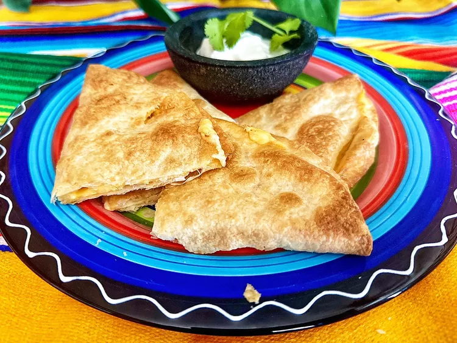

These air fryer quesadillas are golden and crispy, quick and easy to make, and there are no skillets to wash. Both flour and corn tortillas work for this recipe and the choice of cheese is up to you.
Total Time: 20 mins
Servings: 2
Ingredients:
2 flour tortillas
1/2 cup shredded cheese
nonstick cooking spray
air fryer
Instructions
Heat tortillas in the microwave until pliable, about 15 seconds.
Place 1/4 cup cheese on one half of each tortilla; fold other half of tortilla over cheese. Place in air fryer. Spray with non-stick cooking spray.
Set temperature to 375 degrees F (190 degrees C). Place quesadillas in the basket of the air fryer, and cook until golden brown, 4 to 6 minutes. Flip quesadillas, press down with a spatula, and air fry an additional 2 to 3 minutes.